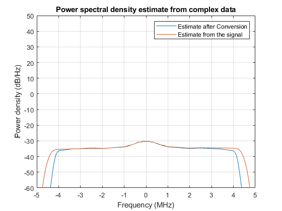

Contents
clear; close all; clc;
Tfull = 0.5;
fsampIQ = 10.0e6;
fIF = 5e6;
N = floor(fsampIQ*Tfull);
nfft = 2^9;
fid = fopen("C:\Users\gsh04\Desktop\2024-Fall\GPS\exam2\problem 3\niData03head_10MHz.bin",'r','l');
Y = fread(fid, [2,N], 'int16')';
Y = Y(:,1) + 1j*Y(:,2);
fclose(fid);
Pwelch from signal
[Syy,fVec] = pwelch(Y,hann(nfft),[],nfft,fsampIQ);
Convert to Bandpass Signal
Tl = 1/fsampIQ;
[xVec] = iq2if(real(Y),imag(Y),Tl,fIF);
[Syy2,fVec2] = pwelch(xVec,hann(nfft),[],nfft,2*fsampIQ);
figure,
yLow2 = -60;
yHigh2 = 55;
area(fVec2/1e6,10*log10(Syy2),yLow2);
ylim([yLow2,yHigh2]);
grid on;
shg;
xlabel('Frequency (MHz)');
ylabel('Power density (dB/Hz)');
title('Power spectral density estimate of Bandpass Signal');
shg;
Convert back to baseband signal
T = Tl/2;
[IVec,QVec] = if2iq(xVec,T,fIF);
Y_recovered = IVec +1j+QVec;
[Syy3,fVec3] = pwelch(Y_recovered,hann(nfft),[],nfft,fsampIQ);
figure,
yLow3 = -60;
yHigh3 = 50;
T = nfft/fsampIQ;
delf = 1/T;
fcenter = (nfft/2)*delf;
fVec3 = fVec3 - fcenter;
Syy3 = [Syy3(nfft/2 + 1 : end); Syy3(1:nfft/2)];
plot(fVec3/1e6,10*log10(Syy3));
ylim([yLow3,yHigh3]);
grid on;
shg;
xlabel('Frequency (MHz)');
ylabel('Power density (dB/Hz)');
hold on,
yLow = -60;
yHigh = 50;
T = nfft/fsampIQ;
delf = 1/T;
fcenter = (nfft/2)*delf;
fVec = fVec - fcenter;
Syy = [Syy(nfft/2 + 1 : end); Syy(1:nfft/2)];
plot(fVec/1e6,10*log10(Syy));
ylim([yLow,yHigh]);
grid on;
shg;
xlabel('Frequency (MHz)');
ylabel('Power density (dB/Hz)');
title('Power spectral density estimate from complex data');
shg;
legend('Estimate after Conversion', 'Estimate from the signal')
fprintf(['After converting back to baseband with the if2iq function, the higher \n'...
'frequecny signals are lost. This is due to low pass filtering that happens \n' ...
'within the MATLAB decimate function when we convert the bandpass signal back \n'...
'to baseband signal. Also, the output of the if2iq was scaled by 2 because \n' ...
'the discrete bandpass signal after mxing and going through the low pass \n'...
'filter has the half the magnitude of the original signal. \n'])
After converting back to baseband with the if2iq function, the higher
frequecny signals are lost. This is due to low pass filtering that happens
within the MATLAB decimate function when we convert the bandpass signal back
to baseband signal. Also, the output of the if2iq was scaled by 2 because
the discrete bandpass signal after mxing and going through the low pass
filter has the half the magnitude of the original signal.
